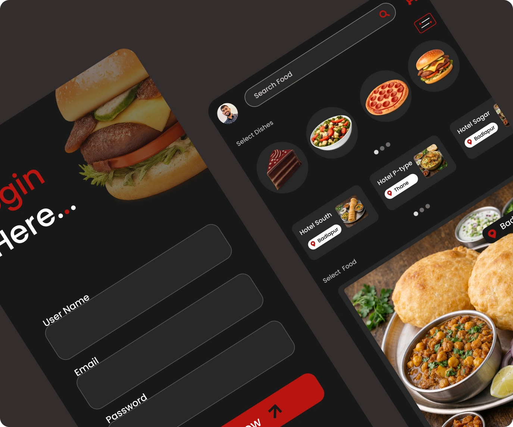

Modern Food Delivery Mobile App
Food Delivery Mobile App A modern food delivery mobile app designed to simplify food ordering through intuitive restaurant discovery, organized menu browsing, and a seamless checkout experience with a clean and user-friendly interface.

Project Overview
This project is a modern food delivery mobile application designed to help users discover restaurants, explore menus, and order food through a fast and intuitive experience. The primary goal was to simplify the food ordering journey by presenting restaurants, dishes, and checkout information in a clean and organized interface while reducing unnecessary steps before placing an order. From browsing nearby restaurants to reviewing the cart and completing payment, every interaction is designed to feel smooth, efficient, and user-friendly.
Project Information
UI/UX Design
Food Delivery Mobile App
Figma
Mobile Application
Design Challenge
Ordering food online can become frustrating when menus are cluttered, navigation is confusing, or checkout requires too many steps. The challenge was to design an application that: Makes food discovery simple. Displays restaurants and dishes clearly. Helps users browse menus quickly. Builds confidence before ordering. Reduces unnecessary navigation. Creates a fast ordering experience.
User Experience Design Goals
Restaurant Discovery
Discover restaurants effortlessly.
Menu Browsing
Browse menus quickly.
Food Details
View complete food details.
Order with Confidence
Order food with confidence.
Easy Navigation
Navigate without confusion.
Quick Checkout
Complete checkout with minimal effort.
Design Process
Research & Requirement Understanding
Identified user expectations, restaurant ordering behavior, and business requirements to create a fast, convenient, and enjoyable food delivery experience.
Information Architecture
Organized restaurants, food categories, menus, search, and navigation to help users discover meals quickly and order with minimal effort.
UI Design
Designed a clean and modern interface featuring appetizing food imagery, intuitive layouts, and clear ordering actions that simplify decision-making.
Interactive Prototype
Built interactive user flows to validate restaurant browsing, menu exploration, cart interactions, and the complete food ordering experience.
Food Ordering Experience
Refined the end-to-end ordering journey to help users discover restaurants, explore menus, place orders confidently, and complete checkout through a fast and seamless experience.